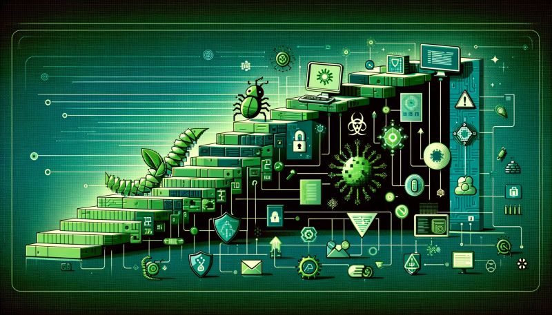
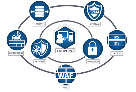
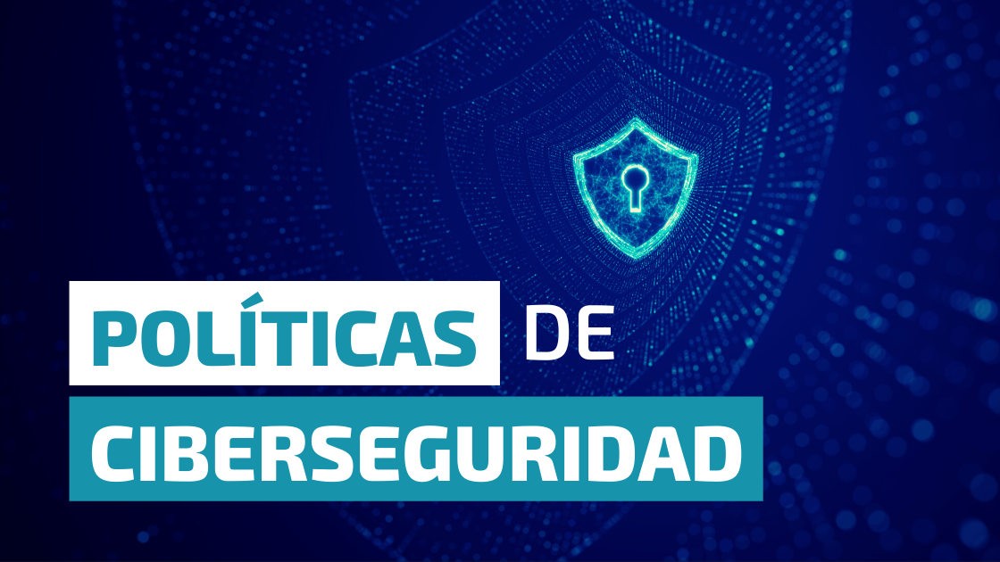

Inicio
La ciberseguridad es un campo crucial en la protección de sistemas informáticos, redes y datos digitales.
¿Qué es la ciberseguridad?

Dale click a la imagen para ver un video
La ciberseguridad es el conjunto de técnicas, procesos y medidas de protección diseñadas para salvaguardar los sistemas informáticos, redes, dispositivos y datos digitales de accesos no autorizados, ataques cibernéticos y otras amenazas.
Su objetivo principal es asegurar la confidencialidad, integridad y disponibilidad de la información y los sistemas digitales.
La ciberseguridad abarca un amplio espectro de actividades, incluyendo la prevención, detección y respuesta a incidentes de seguridad, la gestión de riesgos cibernéticos, el cumplimiento normativo y la capacitación de usuarios.
Es un campo esencial para proteger a individuos, organizaciones y la infraestructura crítica en la era digital actual, donde los sistemas y datos se han vuelto altamente dependientes de las tecnologías de la información.
Historia de la ciberseguridad
La historia de la ciberseguridad se remonta a los inicios de la computación y las redes de datos, a medida que estas tecnologías fueron evolucionando y convirtiéndose en parte fundamental de nuestra sociedad.
Los orígenes de la ciberseguridad se pueden trazar a finales de los años 60 y principios de los 70, cuando los primeros sistemas informáticos comenzaron a interconectarse a través de las primeras redes de comunicación de datos, como ARPANET, precursora de Internet.
En esa época, los pioneros de la computación e ingenieros de redes empezaron a enfrentar los primeros desafíos de seguridad, como intrusiones no autorizadas y la necesidad de proteger la información y los recursos compartidos.
A lo largo de las décadas siguientes, a medida que las redes se expandieron y las computadoras se volvieron más ubicuas, las amenazas cibernéticas también se fueron sofisticando. Aparecieron los primeros virus informáticos, gusanos, troyanos y otros tipos de malware, lo que impulsó el desarrollo de soluciones de seguridad como firewalls, sistemas de detección de intrusos y software antivirus.
En la década de 1990, con la masificación de Internet, la ciberseguridad adquirió una mayor relevancia debido al aumento exponencial de ataques cibernéticos, fraudes en línea y otras actividades maliciosas.
A principios del siglo XXI, con la proliferación de dispositivos móviles, la computación en la nube y el advenimiento del Internet de las Cosas, la ciberseguridad se convirtió en una preocupación estratégica a nivel global, con la aparición de nuevos tipos de amenazas y la necesidad de enfoques más comprehensivos para proteger a las organizaciones y la infraestructura crítica.
En la actualidad, la ciberseguridad se ha consolidado como un campo interdisciplinario que involucra tecnología, procesos, políticas, educación y concientización, con el objetivo de mantener seguros los entornos digitales en constante evolución.
Conceptos de ciberseguridad

Dale click a la imagen para ver un video
Malware: Es un término genérico que se refiere a software malicioso diseñado para infiltrarse o dañar un sistema informático sin el consentimiento del usuario. Esto incluye virus, gusanos, troyanos, ransomware, spyware y adware, entre otros.
Phishing: Es una técnica utilizada por ciberdelincuentes para engañar a las personas y obtener información confidencial, como contraseñas, información financiera o datos personales.
Ransomware: Es un tipo de malware que cifra archivos o bloquea el acceso a sistemas informáticos y luego exige un rescate para restaurar el acceso.
Ingeniería social: Es una técnica utilizada por los ciberdelincuentes para manipular psicológicamente a las personas y obtener acceso no autorizado a sistemas o información confidencial.
Ataques de denegación de servicio (DDoS): Son ataques diseñados para abrumar un sistema, red o servicio en línea con un gran volumen de tráfico malicioso, lo que resulta en la denegación del servicio legítimo a los usuarios.
Estos conceptos son fundamentales para comprender las amenazas cibernéticas que enfrentamos en la actualidad y son la base para desarrollar estrategias efectivas de protección y defensa en el ámbito de la ciberseguridad.
Tecnologías y Herramientas de Seguridad
Exploramos las tecnologías y herramientas utilizadas para protegerse contra amenazas cibernéticas, como firewalls, sistemas de detección y prevención de intrusiones, antivirus, soluciones de cifrado y autenticación multifactorial.
Firewalls: Los firewalls son dispositivos de seguridad que se utilizan para monitorear y controlar el tráfico de red entre una red interna y externa. Pueden ser hardware, software o una combinación de ambos, y actúan como una barrera de protección que filtra el tráfico entrante y saliente según reglas predefinidas.
Sistemas de Detección y Prevención de Intrusiones (IDS/IPS): Los IDS son sistemas que monitorean el tráfico de red en busca de actividades sospechosas o maliciosas y generan alertas cuando se detectan posibles intrusiones.
Antivirus: Los antivirus son programas diseñados para detectar, prevenir y eliminar software malicioso, como virus, gusanos, troyanos y spyware, de dispositivos informáticos.
Cifrado de datos: El cifrado de datos es una técnica utilizada para proteger la confidencialidad de la información mediante la conversión de datos en un formato ilegible que solo puede ser descifrado utilizando una clave o contraseña específica.
Autenticación multifactorial: La autenticación multifactorial (MFA) es un método de verificación de identidad que requiere múltiples formas de autenticación antes de permitir el acceso a un sistema o servicio.
Gestión de identidad y acceso (IAM): La gestión de identidad y acceso es un conjunto de procesos y tecnologías utilizadas para gestionar y controlar el acceso a recursos digitales dentro de una organización.
Estas tecnologías y herramientas son cruciales para la protección de sistemas, redes y datos contra amenazas cibernéticas.
Políticas y Procedimientos de Seguridad
Dale click a la imagen para ver un video
Las políticas y procedimientos de seguridad son directrices y normativas diseñadas para proteger los activos de información de una organización contra amenazas internas y externas.
Seguridad de la información: Las políticas de seguridad de la información establecen las directrices para proteger la confidencialidad, integridad y disponibilidad de la información sensible y crítica para el negocio.
Gestión de contraseñas: Las políticas de gestión de contraseñas establecen los requisitos y mejores prácticas para la creación, almacenamiento y uso seguro de contraseñas por parte de los empleados.
Control de acceso a la red: Las políticas de control de acceso a la red regulan quién tiene acceso a los recursos de red y bajo qué condiciones, utilizando autenticación, autorización y controles de auditoría.
Respuesta a incidentes de seguridad: Los procedimientos de respuesta a incidentes de seguridad establecen los pasos a seguir en caso de que ocurra un incidente cibernético, incluyendo la notificación, mitigación y recuperación de los efectos del incidente.
Actualizaciones de software: Las políticas de actualización de software establecen la periodicidad y los métodos para aplicar parches de seguridad y actualizaciones de software en todos los sistemas y dispositivos de la organización.
Estas políticas y procedimientos son fundamentales para establecer una postura sólida de seguridad cibernética y proteger los activos de información crítica.
Procedimientos de Incidentes de Seguridad
Exploramos las tendencias y desafíos emergentes en ciberseguridad, incluyendo ataques dirigidos, vulnerabilidades de día cero, uso de inteligencia artificial en ciberataques, amenazas relacionadas con el Internet de las Cosas (IoT) y regulaciones de privacidad.
Ataques dirigidos: Los ataques dirigidos son ataques cibernéticos diseñados para infiltrarse en redes específicas o sistemas informáticos con el objetivo de robar datos confidenciales, causar daños o interrumpir operaciones críticas.
Vulnerabilidades de día cero: Las vulnerabilidades de día cero son vulnerabilidades de seguridad recién descubiertas en software, sistemas operativos o dispositivos que aún no tienen una solución o parche disponible.
Uso de inteligencia artificial en ciberataques: El uso de inteligencia artificial por parte de los ciberdelincuentes está aumentando, lo que permite la automatización de ataques, la personalización de amenazas y eludir las defensas tradicionales.
Amenazas relacionadas con el Internet de las Cosas (IoT): Con la proliferación de dispositivos conectados a Internet, como cámaras de seguridad, electrodomésticos inteligentes y dispositivos médicos, surgen nuevas vulnerabilidades y riesgos de seguridad cibernética.
Regulaciones de privacidad: Las regulaciones de privacidad, como el Reglamento General de Protección de Datos (GDPR) en Europa y la Ley de Privacidad del Consumidor de California (CCPA) en los Estados Unidos, imponen requisitos estrictos para la protección y manejo de datos personales.
Estos desafíos subrayan la necesidad de una vigilancia continua y la adopción de estrategias avanzadas de ciberseguridad para proteger a individuos, organizaciones y la infraestructura crítica contra amenazas cada vez más sofisticadas.
Educación y Formación en Ciberseguridad
Exploramos la importancia de la educación y formación en ciberseguridad, incluyendo programas académicos, cursos en línea, certificaciones, eventos profesionales, simulaciones de seguridad y recursos educativos gratuitos.
Programas académicos: Numerosas universidades y instituciones ofrecen programas de grado y posgrado en ciberseguridad, que cubren aspectos técnicos, legales y de gestión de la seguridad.
Cursos en línea: Plataformas educativas en línea ofrecen cursos especializados en ciberseguridad, que permiten a profesionales y estudiantes adquirir habilidades y conocimientos específicos desde cualquier ubicación y a su propio ritmo.
Certificaciones: Las certificaciones en ciberseguridad, como CISSP, CEH, CompTIA Security+, entre otras, validan las habilidades y conocimientos técnicos de los profesionales de la seguridad cibernética y son reconocidas globalmente por la industria.
Eventos profesionales: Conferencias, seminarios y eventos específicos de ciberseguridad proporcionan oportunidades para el aprendizaje, la colaboración y la actualización sobre las últimas tendencias y mejores prácticas en la industria.
Simulaciones de seguridad: Las simulaciones de seguridad permiten a los profesionales practicar y mejorar sus habilidades en un entorno controlado, simulando ataques y escenarios de ciberseguridad reales sin riesgos para la infraestructura crítica.
Recursos educativos gratuitos: Existen numerosos recursos educativos gratuitos, como libros electrónicos, podcasts, webinars y materiales didácticos en línea, que proporcionan información accesible y actualizada sobre ciberseguridad.
La educación y formación en ciberseguridad son fundamentales para desarrollar y mantener la capacidad de individuos y organizaciones para enfrentar las amenazas cibernéticas en un entorno digital en constante evolución.
Políticas de Seguridad en la Empresa
1. Seguridad del Dispositivo:
Actualizaciones de Software:
Mantener el sistema operativo, aplicaciones y programas actualizados es crucial. Las actualizaciones incluyen correcciones de seguridad que protegen contra vulnerabilidades conocidas. Ignorar las actualizaciones puede dejar los dispositivos expuestos a ataques.
Parches de Seguridad:
Además de las actualizaciones, existen parches específicos que solucionan problemas concretos. Por ejemplo, pueden cerrar brechas de seguridad en navegadores o componentes del sistema operativo. Aplicar estos parches es esencial para mantener la seguridad.
Gestión de Vulnerabilidades:
Se deben aplicar medidas correctivas para abordar las vulnerabilidades identificadas.
Concienciación del Usuario:
Comprender la importancia de las actualizaciones y parches es fundamental. La formación en seguridad informática ayuda a crear una cultura de seguridad en la empresa.
Recuerda que la seguridad del dispositivo es responsabilidad de todos. Al seguir estas pautas, contribuirás a proteger la información y la infraestructura de la empresa.
2. Contraseñas Fuertes:
La política de contraseñas fuertes es crucial para la seguridad de los dispositivos y la información en el trabajo remoto.
Permíteme explicarte por qué es importante y darte algunos consejos:
- Importancia:
- Protección contra Ataques: Las contraseñas fuertes dificultan que los atacantes adivinen o descifren las credenciales.
- Cumplimiento Legal: Muchas regulaciones y leyes exigen prácticas de seguridad, incluyendo el uso de contraseñas sólidas.
- Prevención de Brechas: Contraseñas débiles son una puerta abierta a brechas de seguridad.
- Consejos para Contraseñas Fuertes:
- Longitud: Cuanto más larga, mejor. Al menos 12 caracteres es recomendable.
- Combinación de Elementos: Usa letras mayúsculas, minúsculas, números y caracteres especiales.
- Evita Palabras Comunes: No uses palabras del diccionario o información personal.
- No Reutilices Contraseñas: Cada cuenta debe tener una contraseña única.
- Cambia Regularmente: Actualiza tus contraseñas periódicamente.
3. Cifrado de Datos:
Protección de Información Sensible:
El cifrado garantiza que los datos sensibles manejados fuera de la oficina permanezcan inaccesibles para personas no autorizadas.
Seguridad en la Transmisión de Datos:
Protege la información transmitida por internet contra interceptaciones, como los ataques de Man-in-the-Middle.
Cumplimiento de Normativas:
Ayuda a cumplir regulaciones de protección de datos (GDPR, CCPA), evitando sanciones y protegiendo la reputación.
Reducción del Riesgo de Filtraciones:
Asegura que los datos en dispositivos perdidos o robados permanezcan inaccesibles sin las credenciales necesarias.
Confianza y Reputación:
Demuestra compromiso con la seguridad y privacidad, generando confianza entre clientes y socios comerciales.
Protección contra Amenazas Internas y Externas:
Añade una capa de seguridad contra empleados malintencionados o descuidados, además de ataques externos.
Facilidad de Implementación:
Muchas herramientas de trabajo remoto ya incluyen cifrado, facilitando su uso y mejorando la seguridad sin necesidad de soluciones adicionales.
4. Uso de Redes Seguras:
Se debe evitar el uso de redes WiFi públicas o no seguras para acceder a recursos de la empresa. Siempre que sea posible, se debe utilizar una conexión VPN.
5. Protección contra Malware:
Los empleados deben tener instalado un software antivirus confiable en sus dispositivos personales y realizar análisis periódicos.
6. Reporte de Incidentes de Seguridad:
Si un empleado sospecha que su dispositivo personal ha sido comprometido o ha experimentado un incidente de seguridad, debe informarlo de inmediato al equipo de TI.
7. Política de Eliminación Segura:
Cuando un empleado deja de trabajar para la empresa o cambia de dispositivo, se debe seguir una política de eliminación segura para borrar todos los datos de su dispositivo personal.
Protección de Información Sensible:
Los empleados remotos manejan datos confidenciales que, si no se eliminan correctamente, pueden ser recuperados y explotados por terceros no autorizados. La eliminación segura asegura que los datos sean irrecuperables una vez borrados.
Prevención de Brechas de Seguridad:
Los dispositivos utilizados en el trabajo remoto (laptops, smartphones, unidades de almacenamiento) pueden ser robados o perdidos. Si los datos en estos dispositivos no se eliminan de manera segura, existe el riesgo de que caigan en manos equivocadas.
Responde las preguntas y comparte tus opiniones
Después de leer sobre ciberseguridad, te invitamos a responder algunas preguntas para ayudarnos a mejorar nuestro contenido: